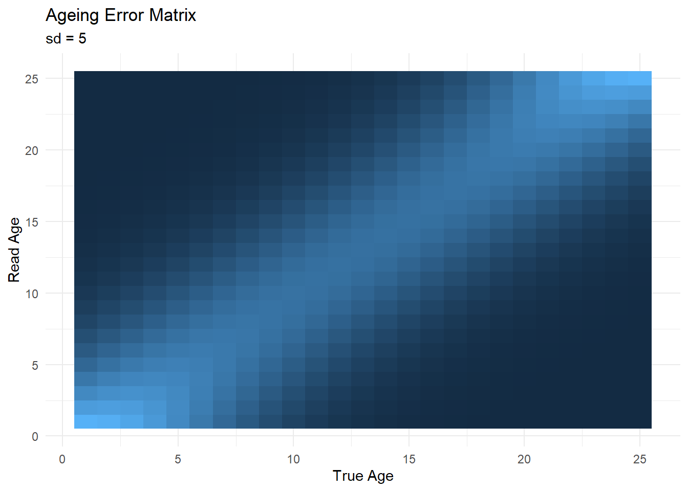

library(ggplot2)
library(tidyr)
n_bins <- 25
n_samples <- 750
n_experiments <- 100Order of Operations for Bootstrapping Age Comps
Overview
On p 170 of the SS3 User Manual v 3.30.15:
“Currently, the aging error matrix is multiplied by the expected distribution of proportions at age, while the more correct order of operations would be to sample true ages, and then sample the observed age including aging error (it is possible these are mathematically identical).”
I was curious whether or not this was actually true.
Defining the two approaches mathematically
Current approach (Routine 1)
The “current” setup can be represented as:
\(\bf{\hat{P}} = \bf{\tilde{P}} \times \bf{\tilde{A}}\)
Where \(\bf{\hat{P}}\) is the boostrapped frequency or proportion of individuals at age \(a\); \(\bf{\tilde{A}}\) is an \(a \times a\) matrix of ageing-error probabilities, where the columns sum to 1; and \(\bf{\tilde{P}}_a\) is the expected distribution of proportions-at-age, resampled from the vector of true population age frequencies \(\bf{{P}}\) and given a specific number of total samples \(n\):
\(\tilde{\bf{P}} \sim multinom(n, \bf{{P}})\).
“Correct” Approach (Routine 2)
The second approach resamples the true population to return \(\tilde{\bf{P}}\) as above, but instead of multiplying by the ageing-error matrix, the expected proportions are re-sampled a second time using the respective values in the ageing-error matrix as the underlying proportions. In principle, this more accurately represents the actual sampling procedure whereby 1) fish are sampled (brought aboard the survey vessel) in a multinomial process from the true population, and then 2) the ‘read’ ages of those individual otoliths are distributed around the ‘true’ age of each fish, given an ageing error matrix. This should more accurately acount for uncertainty arising from both the number of true-age individuals available in the population, as well as the ageing process.
\(\hat{P}_a \sim multinom(\tilde{P}_a, \tilde{A}_a)\).
A visual comparison
This walk-through assumes we have 25 age bins, take 750 total samples and repeat the experiment 100 times.
Here I initialize the ageing-error matrix; the standard error is set to 5 years.
ageing_error_matrix <- matrix(0, nrow = n_bins, ncol = n_bins)
# Fill the ageing-error matrix
for (i in 1:n_bins) {
# Generate a normally-distributed probability vector
prob_vector <- dnorm(1:n_bins, mean = i, sd = 5)
# Normalize the probability vector so it sums to 1
prob_vector <- prob_vector / sum(prob_vector)
# Assign the probability vector to the corresponding column in the ageing-error matrix
ageing_error_matrix[, i] <- prob_vector
}
# Print the ageing-error matrix
#print(ageing_error_matrix)
ggplot(reshape2::melt(ageing_error_matrix), aes(x = Var1, y = Var2, fill = value)) + geom_tile() +theme_minimal() +theme(legend.position = 'none') +labs(x = 'True Age', y = 'Read Age', title = 'Ageing Error Matrix', subtitle = 'sd = 5')
Next we establish the age composition of the true population and run the simulation. I could re-structure this so that a new true population is generated for each experiment – it might be useful to have some straightforward metric for measuring disparities between the Routines.
prop_c = exp(rnorm(n_bins)) ## randomly generate a vector of lognormal proportions for this experiment; length equal to number of bins
prop_c = prop_c / sum(prop_c) ## rescale to get "true" population comp in bin (sums to 1)
# sample from multinomial; the prob of observing a given bin is given by prop_c
experiment_results <- t(rmultinom(n = n_experiments, size = n_samples, prob = prop_c))
## normalize as computation happens
routine1_results <- (experiment_results/rowSums(experiment_results)) %*% ageing_error_matrix
# Initialize the results matrix
routine2_results <- matrix(0, ncol = n_bins, nrow =n_experiments)
# Perform the second routine for each experiment
for (i in 1:n_experiments) {
## make a placeholder with a row for each age candidate
temp <- matrix(0, nrow = n_bins, ncol = n_bins)
for (j in 1:n_bins) {
# Sample from the observed ages using the ageing-error matrix as the probabilities
temp[j,] <- rmultinom(n=1, ## once per experiment
size = experiment_results[i, j], ## as if reading this many otoliths
prob = ageing_error_matrix[, j]) ## the probability of observing a given bin is given by the ageing error matrix
}
routine2_results[i, ] <- colSums(temp)
}
#routine2_results[routine2_results==0] <- 1e-5 ## avoid division by zero
routine2_results <- routine2_results/(rowSums(routine2_results)) ## normalize
# Convert the matrices to data frames
routine1_df <- as.data.frame(routine1_results)
routine2_df <- as.data.frame(routine2_results)
# Add a column for the experiment number
routine1_df$experiment <- 1:nrow(routine1_df)
routine2_df$experiment <- 1:nrow(routine2_df)
# Reshape the data frames to a long format
routine1_long <- reshape2::melt(routine1_df, id.vars = "experiment", variable.name = "age_bin", value.name = "count")
routine2_long <- reshape2::melt(routine2_df, id.vars = "experiment", variable.name = "age_bin", value.name = "count")
# Add a column for the routine number
routine1_long$routine <- "Routine 1"
routine2_long$routine <- "Routine 2"
# Combine the data frames
combined_df <- rbind(routine1_long, routine2_long)
# Convert the age_bin column to numeric
combined_df$age_bin <- as.numeric(gsub("V", "", combined_df$age_bin))Here we visualize the results; it’s evident that the second approach (accounting for ageing error) results in more uncertainty than the current one.
# Create the density plot
ggplot(combined_df, aes(x = age_bin, y = count, color = routine, fill = routine, group = experiment)) +
geom_line(data = data.frame(age_bin = 1:n_bins, count = prop_c,
routine = 'true population', experiment = 1))+
geom_line() +
facet_wrap(~routine)+
theme(legend.position = 'none')+
theme_minimal() +
scale_fill_manual(values = c("Routine 1" = "red", "Routine 2" = "blue", "true population" = "black")) +
scale_color_manual(values = c("Routine 1" = "red", "Routine 2" = "blue", "true population" = "black")) +
labs(x = "Age Bin", y = "Frequency", color = "",
title = "Comparison of Age Composition Sampling Routines") 
How this fits in the literature
There are two key recent publications that set up this work nicely. The first (Siskey et. al. 2023) was conducted to investigate how changing sampling rates and methods in the survey might impact OFLs. These changes generally involve the number of survey tows from which otoliths were returned. To do so, they built a bootstrapping routine that returns input sample sizes and variation in age compositions. Ageing error is not considered in this analysis, such that the boostrapped datasets used to evaluate impacts on OFL do not consider how mistakes in the reading process might compound issues with reduced sample size or modified sampling effort. I suspect that this study under-estimates the range of variation in management quantities.
The recent paper by Hulson et. al. (2024) explicitly addresses the fact that “To date, no method has been developed to integrate the variability in the ageing process when reading otoliths…within the estimation of ISS used to statistically weight age composition data in SCAA models”. That paper presents a method to consider the ageing error matrix (and growth variability) in the bootstrapping procedure, with the specific goal of generating more accurate input sample sizes – since typically we would not be using bootstrapped data in an assessment. From my reading of their methods, re-sampled ages undergo the second re-sampling step based on the tester ages from the age and growth lab (though they have a few extra steps, like filtering & expanding based on CPUE).
So, embedded in the 2024 analysis is an updated method to account for ageing error in the bootstrapping process, though how this impacts a) actual boostrapped datasets and/or b) the resultant derived management quantities was not examined.
What next?
Here are some things we haven’t looked at yet.
- How the \(\sigma\) on the age-error matrix impacts things,
- Relationship between the number of bins and number of samples,
- Any kind of through-time/cohort effects (would require a population model)
I see a few ways forward for this work.
- A simple message to Rick Methot stating that we confirm that the methods are not mathematically equivalent, and that the manual and/or Synthesis bootstrapping routines should be updated.
- Something like the above, accompanied by a short communication in Fisheries Research (I have the bandwidth for this).
- A follow-up study that basically conglomerates Siskey and Pete’s work to indicate how we think changes in e.g. sampling effort might impact assessments, given ageing error. This is a big lift and might be best served by a postdoc; would want to involve A&G and Pete.
Citations
Hulson, P.-J.F., Williams, B.C., 2024. Inclusion of ageing error and growth variability using a bootstrap estimation of age composition and conditional age-at-length input sample size for fisheries stock assessment models. Fisheries Research 270, 106894. https://doi.org/10.1016/j.fishres.2023.106894
Siskey, M.R., Punt, A.E., Hulson, P.-J.F., Bryan, M.D., Ianelli, J.N., Thorson, J.T., 2023. The estimated impact of changes to otolith field-sampling and ageing effort on stock assessment inputs, outputs, and catch advice. Can. J. Fish. Aquat. Sci. 80, 115–131. https://doi.org/10.1139/cjfas-2022-0050